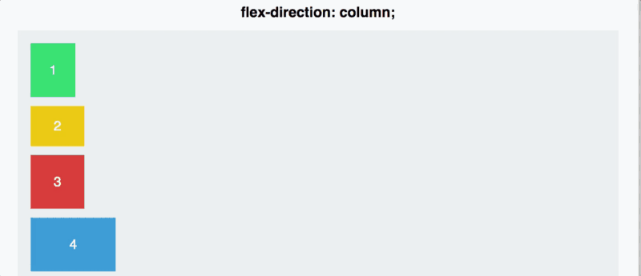

<figure>
    
    <figcaption>Figure 3: Flex direction controls the main axis orientation.</figcaption>
</figure>

<figure>
    <figcaption>Table 1: Browser support for HTML 5 semantic elements.</figcaption>
    <table>
        <tr><th>Element</th><th>Chrome</th><th>FireFox</th><th>Safari</th></tr>
        <tr><td>&lt;main&gt;</td><td>26+</td><td>21+</td><td>7+</td></tr>
        <tr><td>&lt;article&gt;</td><td>6+</td><td>4+</td><td>5+</td></tr>

    </table>
</figure>